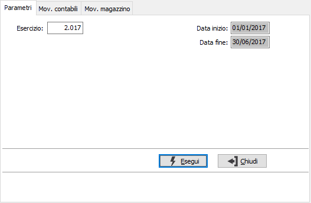
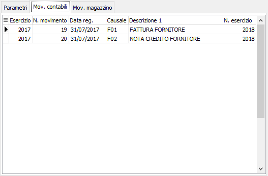
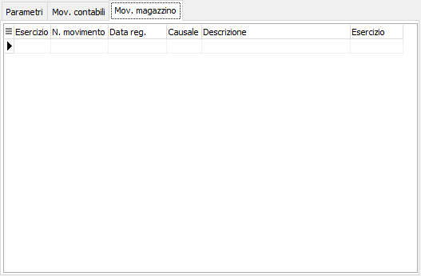

Riallineamento esercizi/movimenti
La funzione consente, nel caso si sia deciso di modificare la durata di un esercizio e dopo averlo già suddiviso a livello di protocolli, di riallineare automaticamente i movimenti contabili, movimenti cespiti, movimenti di contabilità analitica, movimenti dei conti correnti, movimenti di magazzino e del magazzino per fasi (conto lavoro).
Per suddividere un esercizio fiscale, in cui sono già presenti movimenti, in più esercizi fiscali sono necessarie una serie di operazioni mirate, ed inoltre per poter procedere con il riallineamento sull’esercizio fiscale di destinazione non deve essere presente nessun movimento; prima di procedere con il riallineamento devono essere eseguite in sequenza le seguenti operazioni:
Protocolli procedure: aggiornamento data fine esercizio su protocolli contabili e magazzino
Nei parametri viene richiesto l’esercizio; deve essere indicato l'esercizio che deve essere sostituito con quello nuovo; dopo aver inserito tale campo vengono visualizzate le date di inizio e di fine di tale esercizio.

Eseguendo l’elaborazione vengono visualizzati i movimenti contabili e i movimenti di magazzino, ognuno nell’apposita linguetta, che verranno convertiti; su ogni pagina è disponibile, tramite tasto destro del mouse, l'esportazione su Excel o in formato testo. Se si conferma il salvataggio (tasto Salva della toolbar o F10) i movimenti ed i protocolli saranno riallineati.
 |
 |